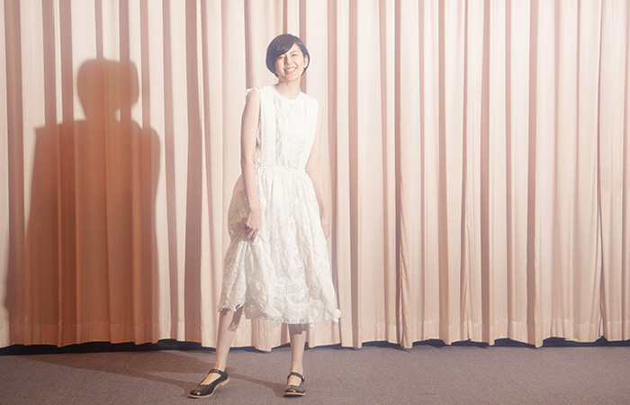
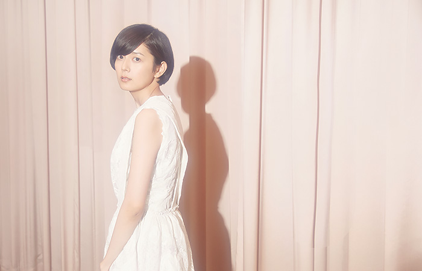

編集長を務めるムック本「マッシュ」が累計３２万部を超えるなど、カルチャー感度の高い男女から絶大な人気を得るモデル、女優の菊池亜希子。よしもとばなな原作の主演映画『海のふた』（監督・豊島圭介）にて、都会を離れ、生まれ故郷でかき氷店を開き、新しい人生を踏み出そうとする主人公、まりを演じている。ロングラン上映中の同じく主演映画『グッド・ストライプス』での好演や、昨年上演された舞台『ハルガナニ』（木皿泉脚本）、『水の戯れ』（岩松了作演出）など、活躍も著しい彼女に、同じ地方出身者として深い共感を得たという主人公のまりについて話を聞いた。
一度挫折しながらも、自分が出来る本当に好きなことを見極めて、自分で決断していて、私はそんなまりを頼もしく思うんです。（菊池）
本作はよしもとばななさんの原作ですけど、最初に原作や脚本を読んだ時、どんな印象を持ちましたか？
菊池：
よしもとばななさんの小説の中で、「海のふた」と同じく海の近くの風景を描いている「TSUGUMI」という作品があって、時代は全然違うんですけど、ばななさんが描こうとしている街って、ばななさん自身が実際に見てきた情景だと思うんです。
夏に家族で訪れていた別荘があったのが、西伊豆の海辺なんですよね。
菊池：
そうですね。幼い頃からそこに通われてた第二の故郷として大切な場所なんだろうなと思っていて。華やかな観光地として栄えているわけではないけれど、きっと思い入れがある大事な場所なんだと思うんです。台本を読んだ時、その情景が目の前に浮かんできました。
『グッド・ストライプス』から立て続けに、主演映画が公開になります。本作『海のふた』のまりと、『グッド・ストライプス』の緑はもちろん別のキャラクターですけど、通じてる部分もあるなって思ったんです。
菊池：
確かに２人は年齢も近いし、緑は地方出身で何か出来る気がして東京に出てきたっていう、いわゆる分かりやすく会社に就職するっていう進路ではない生き方を選んでいて、まりも志したはずの舞台美術の仕事を諦めて地元へ帰ってきていて、大多数の人が選ぶ道とは違う道を選んだものの小さな挫折を経験した女性で、バックグラウンドはどこか似ているんですよね。
緑は半ば妥協のような形で結婚を選ぶんですけど、結婚式までの過程で等身大の幸せに気付いていくというような話でした。
菊池：
緑はある意味で受け身で、宿命に流されていくんですけど、それはポジティブな諦めで、緑はラッキーだったと思うんです。人生の方向転換をさせてくれるきっかけが神様から届けられて、そこに委ねていったわけで。もちろんそこに委ねるのも勇気がいるとは思いますけど。でも、諦めって本来は、まりみたいに自分でどこか踏ん切りをつけて、自分の意思で踏み出さないといけなくて、そうじゃないと、変わらないまま日々をやり過ごしたり、ハードルを下げたりしながら折り合いをつけていくんだと思うんです。まりはその折り合いの付け方が地元に戻るっていう、一度挫折しながらも、自分が出来る本当に好きなことをちゃんと見極めて、やっていくんだって自分で決断していて、私はそんなまりを頼もしく思うんです。
無謀でもあるけど、かなり能動的な方向転換ですよね。
菊池：
最初に幼馴染みのオサムが港に迎えに来てくれて、「辞めてきた」ってあっさり言うまりの表情はあっけらかんとしていて無防備に映るんですけど、実は葛藤と戦ってきた故のあっけらかんなんです。思い立ってすぐ辞めたわけではなくて、自分の中でじわじわ感じてきたものが膨らんで決断したことなはずで。
オサムとのやり取りでもそれが見え隠れしてますよね。もちろん菊池さんがそういう芝居をされたということですけど。
菊池：
あのシーンは撮影初日で、まりの話し方とか佇まいとかを決めるシーンだったので、何テイクかやりましたね。自転車を漕ぎながらっていうお芝居だったんですけど、それは監督が意図してわざとされたことだったんです。
何らかのアクションの中で演じてもらうことで自然な魅力が引き出せると豊島監督は言われていたそうですね。
菊池：
肉体的に負荷をかけることによって頭で整理がつかなくて、そのまま喋るしかなくなるというか、芝居云々という構築的に何かを作るんじゃなくて、力一杯漕ぎながら息を切らせながら出てくる言葉にまりらしさが出てくるんじゃないかっていう考えだったみたいなんです。
確かに、日曜大工的なことをやりながら喋るみたいなシーンも多かったです。わざとらしくないものを目指した演出だったんでしょうか。
菊池：
そうですね。有り難かったというか実際にやりやすかったです。そこまで必要のある動きじゃなくて、座ったまま喋ってもいい台詞かもしれないけど、なるほどなって思いました。あそこでオサムに初めて帰ってきたことを打ち明けるんですけど、最初、私は違う芝居をしていたんです。でも、「なんか違ったんだよね」って笑いながら言ってしまう方が、強がりなまりっぽいなと腑に落ちて。２人の長い１０年の空白の時間を一瞬で埋めながら、力みなく演じられた気がします。
私自身は田舎を捨てたわけじゃなくて、故郷を大事にしながら、東京で生きて行くって決めた人間だから分かるんです。（菊池）
最初はその１０年の空白が心地良くて、２人の関係性はとてもいい感じなんですけど、徐々にズレが出てきますよね。昔を懐かしむまりと、後々分かることですけど日々の中で打ちのめされているオサムの間で、何気なく交わされる会話にオサムは苛立ちを覚えていきますね。
菊池：
その溝っていうのは、いくら同じ土地で育って、思春期を過ごしてきたとしても埋まらないですよね。長らく違う景色を見てきた人間はやっぱり余所者で。「余所者に何が分かるんだよ」って傷つく言葉で、私自身は田舎を捨てたわけじゃなくて、故郷を大事にしながら、東京で生きて行くって決めた人間だから分かるんです。まりのことを話しているといつのまにか自分の話になっちゃいますね（笑）
でも分かります（笑） 故郷の友人との価値観のズレはどうしてもありますからね。それが悪気なく溝になってしまうことってあると思うので。
菊池：
あれだけ青春時代を過ごして、オサムとはそれこそ恋愛もしたにも関わらず価値観というのはズレてきていて、そんな余所者の勝手な言い分に対しての憤りっていうのはあったはずで、オサムはそれをギリギリまで堪えてただろうし、まりの味方でいようとしてくれていましたよね。私はオサムのそういう姿を現場で演じてる時にはそこまで感じられていなくて、完成した映画を観て、オサムって本当にいい男だなって思ったんです（笑）
演じている小林ユウキチさんは実在感があって素晴らしかったです。
菊池：
そうですよね。本当にそう思います。オサムを見つけて一気に懐かしくなっちゃって、元恋人で色んな理由があって別れたはずなのに、「オサム〜」って大声で叫んで、それに答えるオサムのファーストカットだけでもう十分伝わるというか。

２人はまだ好き同士なようで、同志にも見えますよね。
菊池：
そこは難しいところで、別れた後もそれぞれ恋愛はしてきたと思うんですけど、私の予想だと今、オサムに彼女はいないと思うんです（笑） 映画では、まりのロマンスには触れられないんですけど、原作ではまりが好意を寄せる旅人の男性が現れたりして、一方でオサムという存在に対して、この人のこういうところが好きだったんだよなって思い返す場面があったりする。そういうベースがあったので、脚本に描かれてはいなくても、付き合うとかそういうことではなく、オサムは常に味方でいてくれる大事な人だって意識しながら演じてました。１０代の頃に付き合った人って美化しちゃうと思うんです。夢を語った人でもあるし、背中を押して肯定してくれた存在だから。彼が今も変わらず田舎にいてくれたことは、まりにとって幸せだったと思います。そういう男性が時を経ても、おかえりって言ってくれるパターンってなかなかないと思うので。色んなシーンでのオサムの存在が、いるいるって感じで、全然カッコ良くないのに凄くカッコ良く見えるんです（笑）
都会で疲れたからこそ、そういう飾らなさに癒されるんですよね。
菊池：
全然お洒落じゃないですけど、彼の目線というのは温かいですよね。それは演じている時には気付けなかった部分でした。
だからこそ、この映画でまりが一番感情を爆発させる終盤のオサムとの衝突シーンは菊池さんの迫真の芝居に打たれます。昨年、菊池さんが出演された舞台『水の戯れ』も観させて頂いているんですよ。
菊池：
そうなんですか。ありがとうございます！
『グッド・ストライプス』もそうですけど、女優として今、とても充実されてるような印象を受けます。『水の戯れ』は今作とは真逆のミステリアス役で。
菊池：
去年１年間の中で、役柄としてはそれほど幅広かったとは感じてないんですけど、自分の中であらゆる感情の引き出しを引っ張り出してやってきた１年だったと思います。２月に『グッド・ストライプス』を撮って、この『海のふた』が５月で、その後に『水の戯れ』ですね。いいタイミングで向き合うべき役をやらせて頂けたと思います。
お客さんの求めるものを作ることがお店をやるってことで。そうじゃなければ創作活動の域にとどめるしかない。（菊池）
オサムと衝突するこの夜のシーンは、今まで見たことのない菊池さんが映っていますよね。
菊池：
まりの発言のひとつひとつが私自身の体から発してもおかしくない言い分だったりして。「負けんなよ」とか、諦めて地元に帰ってきたお前が言うなよって感じだけど言っちゃう気持ち分かるし、オサムに言われた「趣味でやってるだけだろ」とか傷つく言葉だったと思う。普段言葉を荒げる事がないので、うまく言葉が届かないのがもどかしくて、でもここにいる自分の一番の理解者である人を何とかして立ち止まらせようって必死なんです。彼が言っていることも正論なので返す言葉もないけど、とにかく説得しなきゃ此処からいなくなっちゃうので。小林君とは、そんなに話し合ったわけじゃないんですけど、思い切りいくからって言われて、あざを作りながらやりましたね（笑） 誤摩化してやるみたいな考えは、私も彼の中にもなくて。妥協をしないで、何テイクも重ねました。
あのシーンは、映画のテーマでもある「理想と現実」を象徴していて、理想サイドのまりと、現実サイドのオサムのぶつかり合いですよね。
菊池：
そうなんです。原作を読んでも思ったんですけど、オサムという存在がこの映画を現実に繋ぎ止めている存在で。一方で、三根梓ちゃん演じるはじめっていう、傷を追いながらも神秘的で寄り添ってくれる妖精のような対極の存在がいる。
劇中で、まりのことなら何でも分かるみたいなはじめの台詞がありますね。
菊池：
なんかちょっと第六感というか、そういう力を持っていて、全く自分と違うタイプだから興味を持ったのもあると思うんです。でも、オサムの存在がもし無かったら、この映画は２人の女性が支え合いながら、お互いの傷ついた部分を労りながら、どう生きていくかを見つける再生の物語になっていたと思うんです。癒しムービーじゃないですけど。
それは、豊島監督の特性によるところもあったような気もします。
菊池：
監督が男性だったのも大きいと思います。そうは言ってらんないよっていう現実を提示してくるのは男性だったりするので。必ずしも男性がお金を稼がなければならないってわけではないですけど、まりが甘いなって思うのは、自分が稼がなくても、最悪、家があるし、親がいるっていう根本的な部分なんです。それでも寂れた街でお店を始めたまりの行いは意味のあることだと私は思うんです。でもオサムの立場で考えると、親に頼れないし、むしろ親を救うために自分しかいないっていう状況なわけで、まりの行いが趣味って言われて当然。一方で、まりが故郷へ戻ってきたこと自体はオサムは嬉しくもあったはずで。
応えたいけど、現実問題、うまくいってないという状況ですよね。
菊池：
お互いにお互いの不満をぶつけながらも自分の不安定さに嫌悪感を抱いてしまって、自信を喪失しているんです。相手を責めながら、自分を責めるっていう構図だったので、どちらの立場で観ても胸が苦しくなりますね。あのシーンがあって、はじめて観ている方は、まりのことを受け止められるような気がしていて、あれがないと突き放されがちなキャラクターだと思うんです。考えが甘い中でまたすぐ飛び立っちゃうみたいな定まらない人って結構いると思うんですけど、そうなって欲しくないから、私自身もまりを応援したい気持ちがありました。

現実と折り合いをつけるということの象徴として、いちご味のかき氷が出てきますよね。糖蜜とみかん水の２つの味だけに拘っていたまりが、遂に折れるけど、それは別に希望を捨てたわけではないですよね。
菊池：
そうですね。オサムとの衝突が無かったら、まだしばらく２種類のかき氷しか出さないお店だったんじゃないかと思う（笑） 自分の拘りとは違っても、お客さんの求めるものを作ることがお店をやるってことで。そうじゃなければ創作活動の域にとどめるしかない。お金を取って商売にするには、何が喜んでもらえるかを考えなければ成立しない。だけど、まりは市販の加工したいちごを使うんじゃなくて生のいちごから煮込んで、自分なりにOKを出せるいちごのシロップを使うってところで、ゴーを出したんだと思うんです。
この「理想と現実」っていうテーマは、観客やお客さんがあっての娯楽や芸能活動ってものにも当てはまる気がします。
菊池：
そこには多くの人に伝わるメッセージが込められていて、私は学生の頃に建築の勉強をしてたんですけど、そこからアートの方に興味が向かって、アトリエや美術館を回るようになったんですけど、やっぱり私は建築が好きなんだって思ったんです。アート作品ってそれを良いと言われようが悪いと言われようが成立する。その世界では私は生きていけないって思って。だけど建築はアートじゃなくてデザインなんです。そこを利用する人がいてはじめて建築は成立する。そういうものが私は好きだなって当時思いました。
ファッションや料理もそうで、衣食住っていうのは特にそうかもしれないですよね。
菊池：
受け取る相手がいてはじめて成立する仕組みのものですよね。私の場合は建築でそれを感じたことがあるし、例えば、それはミュージシャンや漫画家でも当てはまると思うし、何か自分の拘りを形にしてそれを生業にするには、まりが直面した「いちごシロップ作るか作らないか問題」って色んなことに置き換えられると思います。映画を観て頂いた人にとってのいちごシロップって何だろうみたいに、自分の信じる道で仕事をしている色んな人に響くメッセージになるんじゃないかと思います。